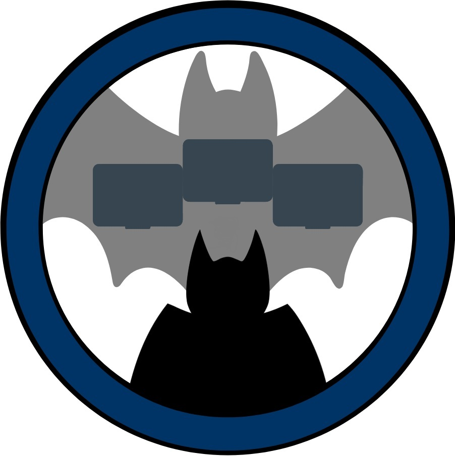
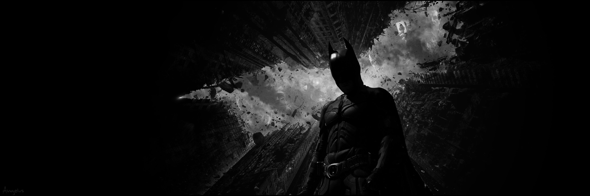
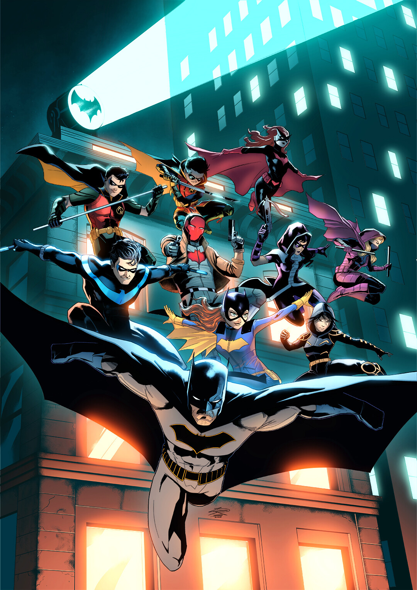

About Batman
Batman is a fictional superhero created by DC Comics. His real name is Bruce Wayne, a billionaire industrialist and philanthropist who witnessed the murder of his parents as a child. This traumatic event drives him to fight crime in Gotham City. Unlike many superheroes, Batman has no superpowers—instead, he relies on his intelligence, detective skills, martial arts training, and advanced technology.
He wears a dark costume designed to instill fear in criminals and often operates from the shadows. His iconic gear includes the Batmobile, a utility belt filled with gadgets, and a cape that allows him to glide. Batman is often called the Dark Knight or the World's Greatest Detective, and he's known for his complex moral code and determination to uphold justice without killing.

Batfamily
From top to bottom, left to right:
Kate Kane: Batwoman, Damian Wayne Al Ghul: Robin,
Tim Drake: Red Robin, Jason Todd: Red Hood,
Helena Bertinelli: Huntress, Stephanie Brown: Spoiler,
Dick Grayson: Nightwing, Barbara Gordon: Batgirl,
Cassandra Cain: Orphan, Bruce Wayne: Batman.